Based on the paper by Marc Finzi, Shikai Qiu, Yiding Jiang, Pavel Izmailov, J. Zico Kolter and Andrew Gordon Wilson (Carnegie Mellon University, New York University), arXiv:2601.03220, version 2, March 2026
The paper and the code are public.
Three apparent paradoxes of information
Finzi et al. (2026), Section 5 introduce three apparent tensions between classical information measures and observations in machine learning. They motivate a measure relative to an observer with bounded computation.
- Deterministic computation cannot increase information. Yet self-play and synthetic data can improve model capabilities. AlphaZero, for example, generated its training games from the rules and a reinforcement-learning procedure. The procedure is compact to specify, but running it produces a network with useful chess strategies.
- Total information does not depend on prediction order. Yet language-model loss can differ when text is modelled forward or in reverse. A description that exists mathematically may be much harder for a particular model to use in one order.
- Likelihood modelling targets the data distribution. This is sometimes taken to mean that a model can only reproduce the generating procedure. Yet assigning probabilities to observations can require inference that the generator never performs.
These are not contradictions of classical theorems. In particular, an improvement in model capabilities does not imply an increase in Shannon entropy, and matching a distribution does not uniquely determine an algorithm. The question is which regularities an observer can use within its computational budget. This also matters for data selection: datasets of the same size can yield models with different downstream performance.
We first define Shannon entropy and Kolmogorov complexity, explain the three tensions, then introduce epiplexity and examine its estimators and experiments.
Two classical notions of information
Two classical measures answer different questions. For a discrete random variable \(X\) with probability distribution \(p(x)=\Pr[X=x]\), the Shannon entropy is
\[H(X)=\mathbb{E}\bigl[-\log_2 p(X)\bigr].\]For every binary prefix code, the expected code length is at least \(H(X)\); block codes can approach this lower bound per sample. The Kolmogorov complexity \(K(x)\) of one realised string \(x\) is the length of the shortest self-delimiting program that makes a fixed prefix-free universal Turing machine \(\mathcal{U}\) output \(x\) and halt (Li and Vitányi, 2008).
The distinction is easiest with two examples:
- Random bits: high Shannon entropy and, for a typical realised string, high Kolmogorov complexity. There is little to predict and no short program to discover.
- A fixed repeated pattern: a distribution concentrated on one alternating string has zero entropy. The string also has low complexity: a program only needs the repetition rule and the length. A pattern alone does not determine entropy; the distribution matters.
These measures describe uncertainty or compressibility. They do not say whether a particular learner can discover a pattern within a finite compute budget. A model trained on random API keys learns little beyond their frequencies; a model trained on a compact algorithm can learn reusable circuits even when the algorithm itself is short. Figure 1 illustrates the distinction.
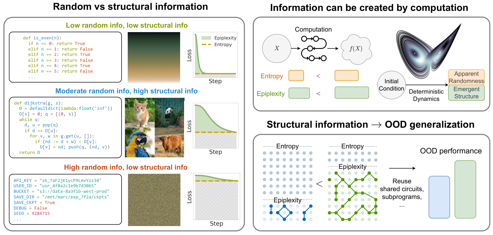
Figure 1. Left: three kinds of data and the training loss of a model on each. The dashed line is the final-loss baseline; the green area is the cumulative excess loss above that baseline, used as a proxy for the model part. Right: computation can create both kinds of information; learned structure can transfer to out-of-distribution (OOD) tasks. Source: Fig. 1 of the paper.
We can now make the classical statements behind the opening precise:
| Classical statement | Observation in practice |
|---|---|
| A deterministic map \(f\) adds no information: \(H(f(X))\le H(X)\) and \(K(f(x))\le K(x)+K(f)+c\) | Pseudorandom generators create randomness; self-play and synthetic data improve models |
| Information does not depend on the order of prediction: \(H(X)+H(Y\mid X)=H(Y)+H(X\mid Y)\) | Language models compress English text better left to right than in reverse (Papadopoulos et al., 2024) |
| Population negative log-likelihood is minimized by \(P=Q\) when the model class contains the data distribution \(Q\) | Matching those probabilities may require inference or representations absent from the sampling procedure |
Here \(c\) is a constant independent of \(x\); \(Q\) is the distribution of the data. The first two statements concern classical information measures. The third concerns the optimum of a population prediction objective; it says nothing about the internal algorithm of a model attaining that optimum.
Paradox 1: a short description can require extensive computation
For a discrete random variable \(X\) and a deterministic computable transformation \(f\),
\[H(f(X))\le H(X),\qquad K(f(x))\le K(x)+K(f)+c.\]The entropy inequality follows because \(f(X)\) is fixed once \(X\) is known: the chain rule gives \(H(X)=H(f(X))+H(X\mid f(X))\), and conditional entropy is non-negative. The complexity inequality follows by composing a program for \(x\) with a program for \(f\). Neither argument bounds how long that program takes to run.
A pseudorandom generator illustrates the distinction. It expands a uniformly random \(k\)-bit seed into \(n>k\) bits. Its output has Shannon entropy at most \(k\) and a description consisting of the seed and the generator program. Yet, assuming cryptographic security, efficient statistical tests cannot distinguish it from uniform \(n\)-bit data. The output can therefore be unpredictable to a bounded observer without having higher Shannon entropy.
Self-play raises a related question about useful structure. Once the algorithm and random seed are specified, its output is determined. But a learner given that short specification may lack the budget to run the training procedure. A trained policy can provide usable predictions that the specification alone does not provide within the same budget. The formal result below concerns pseudorandomness; the cellular-automaton experiments separately examine estimated model structure.
Paradox 2: exact conditional probabilities may be expensive
The chain rule gives
\[H(X)+H(Y\mid X)=H(X,Y)=H(Y)+H(X\mid Y).\]Both orders describe the same pair, provided the exact conditional distributions can be used. This identity does not bound the cost of evaluating or sampling from those distributions.
Let \(X\) be uniform on \(n\)-bit strings and \(Y=f(X)\) for an efficiently computable bijection \(f\). Then \(Y\) is also uniform, and \(H(Y\mid X)=H(X\mid Y)=0\): each variable uniquely determines the other. Encoding the input first requires \(n\) bits for \(X\) followed by computation of \(f(X)\). Encoding the output first also has entropy \(n\), but recovering the input requires computing \(f^{-1}(Y)\). If \(f\) is a one-way permutation, efficient inversion is hard despite the unique inverse.
This is a difference in computation, not in the classical joint entropy. Under a time bound, it can affect the conditional models available in each direction. The paper proves an asymmetry for one-way permutations and tests prediction order empirically with cellular automata and chess data.
Paradox 3: distribution matching does not specify an algorithm
Let \(Y\sim Q\) and let \(P\) be a candidate probability model. Add and subtract \(-\log_2 Q(Y)\) in the expected loss:
\[\begin{aligned} L_Q(P)&:=\mathbb E_{Y\sim Q}[-\log_2 P(Y)]\\ &=\mathbb E_Q[-\log_2 Q(Y)] +\mathbb E_Q\!\left[\log_2\frac{Q(Y)}{P(Y)}\right]\\ &=H(Q)+\mathrm{KL}(Q\Vert P). \end{aligned}\]Here \(H(Q)=H(Y)\), and the second term is the Kullback–Leibler (KL) divergence. It is non-negative and equals zero exactly when the two distributions agree. If \(P\) assigns zero probability to an event of positive \(Q\)-probability, the loss and divergence are infinite. Consequently, population loss is minimized at \(P=Q\) when \(Q\) is in the model class. A restricted class or finite-data training need not attain that optimum.
The identity constrains probabilities, not the algorithm used to compute them. In the paper’s mystery-story example, the author chooses a culprit before writing the clues. A predictor sees the clues and must infer the culprit to predict the reveal. The two procedures can represent the same distribution while performing different computations. The paper calls inference about hidden variables induction. We examine its hidden-input experiment later, alongside emergence: predicting long-run dynamics through larger-scale patterns when direct simulation is too costly.
Information for an observer with bounded time
A model that runs in bounded time
Definition 1 fixes the models available to the observer: probability models that can score an observation and generate a new one within a time bound. The observer is not allowed to hide an unlimited computation inside its model.
The quantity built from this restriction is epiplexity (from epistemic complexity): the amount of structure that the bounded observer can extract and use.
Definition 1 (time-bounded probabilistic model; Def. 7 of the paper). Let \(\mathcal{U}\) be a fixed prefix-free universal Turing machine: no program is a proper prefix of another. Let \(T:\mathbb{N}\to\mathbb{N}\) be a non-decreasing time-constructible function. A program \(\mathrm{P}\) is a \(T\)-time probabilistic model over \(\{0,1\}^n\) if \(\mathcal{U}\) runs it in two modes, each halting within \(T(n)\) steps:
- evaluation: on input \((0,x)\) with \(x\in\{0,1\}^n\) it outputs a probability \(P(x)\in[0,1]\) with a finite binary expansion;
- sampling: on input \((1,u)\), for an infinite string \(u\) of random bits, it outputs \(x\in\{0,1\}^n\) with probability \(P(x)\).
The probabilities sum to one. \(\mathcal{P}_T\) is the set of all such programs; \(\lvert\mathrm{P}\rvert\) is the length of \(\mathrm{P}\) in bits.
Roman \(\mathrm{P}\) denotes the program and italic \(P\) the distribution it computes. A function \(T\) is time-constructible if \(\mathcal{U}\) can compute \(T(n)\) from \(n\) within \(O(T(n))\) steps. The definition requires both modes because a useful model of data does both: it scores an observation and generates new ones. A transformer with a softmax output does both within a fixed number of forward passes, as do most sequence models.
Epiplexity and time-bounded entropy
A program in \(\mathcal{P}_T\) gives a two-part code for data. First transmit the program describing a useful model; then transmit the residual data using that model. Arithmetic coding of \(x\) with a model \(P\) has ideal length \(-\log_2 P(x)\) bits, up to coding overhead. The best program under the time bound splits the information in \(X\) into a model part and a residual part.
Definition 2 (epiplexity and time-bounded entropy; Def. 8 of the paper). For a random variable \(X\) on \(\{0,1\}^n\), let
\[\mathrm{P}^\star=\arg\min_{\mathrm{P}\in\mathcal{P}_T}\Bigl\{\lvert\mathrm{P}\rvert+\mathbb{E}\bigl[-\log_2 P(X)\bigr]\Bigr\},\]with ties broken by the shortest program. The epiplexity of \(X\) is \(S_T(X):=\lvert\mathrm{P}^\star\rvert\). The time-bounded entropy of \(X\) is \(H_T(X):=\mathbb{E}\bigl[-\log_2 P^\star(X)\bigr]\).
The sum \(\mathrm{MDL}_T(X):=S_T(X)+H_T(X)\) is the minimum description length (MDL) of \(X\) under the bound. Epiplexity is the model part of this code: the bits of structure the observer has to keep in order to predict well. Time-bounded entropy is the data part: the bits that remain unpredictable even for the best model the observer can run.
In plain language: how much of the data can this learner explain with a reusable model, and how much still looks random to it? The answer changes when the allowed compute or the model family changes.
- Uniform random bits. Let \(U_n\) be uniform on \(\{0,1\}^n\), with the length \(n\) available to the model and \(T(n)\) sufficient to evaluate and sample the uniform distribution. A program of constant length \(c_2\) assigns \(P(x)=2^{-n}\) to every string; the two-part code with this program has length \(n+c_2\). Hence \(\mathrm{MDL}_T(U_n)\le n+c_2\). By the Gibbs inequality, no model codes \(U_n\) in fewer than \(n\) bits on average: \(H_T(U_n)\ge H(U_n)=n\). Therefore \(S_T(U_n)\le c_2\): the model part is constant, while the residual code grows linearly with \(n\).
- Two alternating strings. Let \(X\) be \(0101\ldots\) or \(1010\ldots\), each with probability \(\tfrac12\). Take \(T(n)=\Theta(n)\). A program of constant size assigns probability \(\tfrac12\) to \(0101\ldots\) and to \(1010\ldots\) within linear time. Both \(S_T(X)\) and \(H_T(X)\) are \(O(1)\).
Only the total is monotone in the bound: \(\mathrm{MDL}_{T'}(X)\le\mathrm{MDL}_T(X)\) whenever \(T'\ge T\). Epiplexity itself can rise or fall with \(T\); an experiment below shows it falling.
For pairs of random variables the authors define conditional versions.
Definition 3 (conditional quantities; Def. 11 of the paper). Let \(\mathcal P_T^X\) be the programs that receive \(x\) as input and evaluate and sample a distribution of \(Y\) within the time bound for every fixed \(x\). Choose
\[\mathrm P^\star_{Y\mid X}\in\arg\min_{\mathrm P\in\mathcal P_T^X} \left\{|\mathrm P|+\mathbb E_{X,Y}[-\log_2 P(Y\mid X)]\right\},\]again selecting the shortest program among minimisers. Define
\[S_T(Y\mid X):=|\mathrm P^\star_{Y\mid X}|,\qquad H_T(Y\mid X):=\mathbb E_{X,Y}[-\log_2 P^\star(Y\mid X)].\]
For image classification, \(X\) is the image and \(Y\) its label. The decoder already has the images: the model code describes the classifier, and the data code encodes labels using its conditional probabilities. Images are not transmitted in this conditional code; the expectation still averages over the joint distribution of images and labels.
Unlike Shannon entropy, these quantities obey no chain rule: in general \(H_T(Y,X)-H_T(X)\ne H_T(Y\mid X)\). Paradox 2 rests on this asymmetry.
The theory
The theorems use a polynomial time bound. We write \(S_{\mathrm{Poly}}\) and \(H_{\mathrm{Poly}}\) for \(S_T\) and \(H_T\) with \(T\) a polynomial in \(n\). Below, \(c\) is a fixed constant.
Pseudorandom numbers are random to a bounded observer
A pseudorandom generator (PRG; Blum and Micali, 1982) stretches a short random seed into a long string that looks random to every efficient test.
Definition 4 (non-uniform PRG; Def. 3 of the paper). A function \(G:\{0,1\}^k\to\{0,1\}^n\) with \(n=\mathrm{poly}(k)\) is a PRG if every probabilistic polynomial-time test \(D\), given an advice string of length \(\mathrm{poly}(k)\), has a negligible advantage in telling \(G(U_k)\) from \(U_n\):
\[\varepsilon(k)=\Bigl\lvert\Pr_{s\sim U_k}\bigl[D(G(s))=1\bigr]-\Pr_{u\sim U_n}\bigl[D(u)=1\bigr]\Bigr\rvert<k^{-m}\quad\text{for every }m>0\text{ and all large }k.\]
Theorem 1 (Thm. 9 of the paper). For every PRG \(G\) with advantage \(\varepsilon(k)\),
\[n-2-n\varepsilon(k)<H_{\mathrm{Poly}}\bigl(G(U_k)\bigr)\le n+c,\qquad S_{\mathrm{Poly}}\bigl(G(U_k)\bigr)\le c+n\varepsilon(k).\]
The Shannon entropy of \(G(U_k)\) is only \(k\): there are \(2^k\) seeds. The polynomial-time Kolmogorov complexity of \(G(U_k)\) is at most \(k+c\), because \(G\) together with the seed is a short program. To a polynomial-time observer, however, the output is as unpredictable as \(n\) truly random bits and contains no structure. Epiplexity and time-bounded entropy agree with the intuition that pseudorandom numbers are random and nothing more.
Paradox 1: deterministic computation creates information
Theorem 2 (Thm. 12 of the paper). For every PRG \(G\) with advantage \(\varepsilon(k)\),
\[H_{\mathrm{Poly}}\bigl(G(U_k)\bigr)-H_{\mathrm{Poly}}(U_k)>n-k-n\varepsilon(k)-c.\]
The output of the deterministic map \(G\) has about \(n-k\) bits more time-bounded entropy than the input. The time-bounded analogue of the classical bound \(H(f(X))\le H(X)\) therefore fails. The reason is an asymmetry between \(G\) and \(G^{-1}\) that appears only under a time bound: \(K(G^{-1})=K(G)+O(1)\), while a short program for \(G\) gives no fast program for \(G^{-1}\). The authors derive a practical rule for synthetic data: to create new information, use transformations without a simple and efficiently computable inverse.
Theorem 2 concerns random information only. Evidence that computation also creates structure is empirical: the cellular-automaton experiment below.
Paradox 2: the order of prediction matters
A one-way permutation is a bijection \(f\) of \(\{0,1\}^n\), computable in polynomial time, that efficient algorithms cannot invert. Formally, every probabilistic polynomial-time algorithm \(A\) with polynomial advice has \(\Pr_{x\sim U_n}[A(f(x))=x]<n^{-m}\) for every \(m>0\) and all large \(n\).
Theorem 3 (Thm. 13 of the paper). Let \(f\) be a one-way permutation, \(X=U_n\) and \(Y=f(X)\). Then
\[H_{\mathrm{Poly}}(X\mid Y)+H_{\mathrm{Poly}}(Y)>H_{\mathrm{Poly}}(Y\mid X)+H_{\mathrm{Poly}}(X)+\omega(\log_2 n).\]Here \(\omega(\log_2 n)\) is a term \(g(n)\) with \(g(n)/\log_2 n\to\infty\).
For Shannon entropy both sides equal \(H(X,Y)\). Under a time bound, predicting \(X\) first and then \(Y=f(X)\) is easy: the observer computes \(f\). Predicting \(Y\) first and then \(X\) requires inverting \(f\), which no polynomial-time observer can do. The same data leave more random information in one order than in the other.
The authors check this with an elementary cellular automaton (ECA): a row of binary cells updated in parallel by a rule \(r\in\{0,\dots,255\}\) that sets each cell from the three cells centred on it. Rule 30 is believed to be one-way (Wolfram, 2002). The map \(f\) is 8 updates of rule 30 on \(n\) cells with periodic boundary. In Figure 2, a transformer trained in the forward order reaches the Shannon entropy of the data; in the reverse order a gap to the Shannon entropy persists.
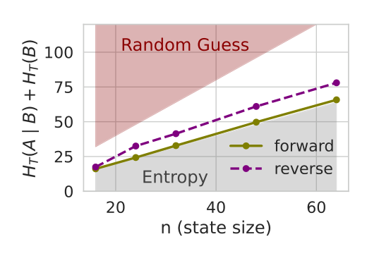
Figure 2. Total time-bounded entropy of an input–output pair of rule 30 against the number of cells \(n\), predicted in the forward order (input first) and in the reverse order (output first). Grey region: the Shannon entropy. Source: Fig. 4a of the paper.
How much structure can exist?
Theorem 4 (Thm. 10 of the paper). If one-way functions secure against probabilistic polynomial-time algorithms with polynomial advice exist, then some random variables \(X_n\) on \(\{0,1\}^n\) have \(S_{\mathrm{Poly}}(X_n)=\Omega(\log_2 n)\).
Epiplexity can therefore grow without bound. The authors acknowledge the limits of this result. Logarithmic growth is far below the power laws suggested by natural data; the proof is non-constructive. No theorem gives an explicit distribution with large epiplexity.
Measuring epiplexity with neural networks
From programs to training runs
A search over all programs is intractable. The authors restrict \(\mathcal{P}_T\) to neural networks of one architecture trained by one optimiser. They measure time in floating-point operations (FLOPs). A network with \(N\) parameters trained on \(D\) tokens needs about \(6ND\) FLOPs; evaluating it on the \(\mathcal{D}\) tokens of the dataset \(X\) needs \(2N\mathcal{D}\). A training run is admissible under the bound \(T\) when
\[6ND+2N\mathcal{D}\le T.\]The authors call \(X\) the test dataset: we choose the training data freely, while \(X\) is the data whose information we measure.
Writing out the weights of a trained network overestimates the information in them, particularly for large networks trained on little data. The authors encode the training process instead, with the prequential or the requential code.
Prequential coding: the area under the loss curve
Let \(Z_0,\dots,Z_{M-1}\) be i.i.d. training examples. Let \(P_i\) be the network after training on the first \(i\) examples, so \(P_0\) is the initial model. Sender and receiver agree on the initialisation, update rule and random seed. The prequential code (Dawid, 1984) encodes \(Z_i\) before updating the model on it. Its ideal contribution is
\[\ell_i=-\log_2 P_i(Z_i)=\log_2\frac{1}{P_i(Z_i)}\]bits. Actual arithmetic coding adds rounding and termination overhead. After decoding, both sides make the same update and obtain \(P_{i+1}\). The chain rule explains why the contributions add: the adaptive predictions define a joint probability
\[\begin{aligned} Q_{\mathrm{preq}}(Z_{0:M-1}) &=\prod_{i=0}^{M-1}P_i(Z_i),\\ L_{\mathrm{preq}} &=-\log_2 Q_{\mathrm{preq}}(Z_{0:M-1}) =\sum_{i=0}^{M-1}\ell_i. \end{aligned}\]Each \(P_i\) depends on the already decoded prefix. Consequently this code reconstructs both the data and the final network \(P_M\). It is a data code, rather than a separate code for the model alone.
To isolate a model part, the paper uses the symmetry-of-information intuition: a description of the data and their deterministically trained model can be organised as “model, then data given model”. This suggests subtracting \(L_{\mathrm{final}}=\sum_i-\log_2 P_M(Z_i)\) from the sequential data code (Zhang et al., 2020). Write the result as an estimate, \(\widehat K_{\mathrm{preq}}\):
\[\begin{aligned} \widehat K_{\mathrm{preq}} &:=L_{\mathrm{preq}}-L_{\mathrm{final}}\\ &=\sum_{i=0}^{M-1}\Bigl[-\log_2 P_i(Z_i)+\log_2 P_M(Z_i)\Bigr]. \end{aligned}\]This is the discrete area between the predictive-loss curve and the final-model loss. For a plot sampled every \(\Delta_i\) tokens, multiply each loss gap in bits per token by \(\Delta_i\); the sum then has units of bits. A flat curve gives little area, rapid improvement gives a small area, and sustained improvement gives a larger area. With finite samples these are tendencies, rather than exact statements about every dataset.
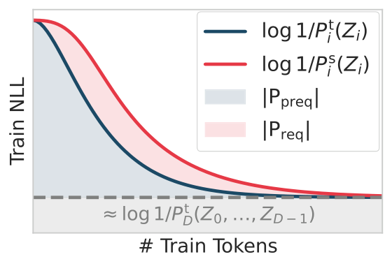
Figure 3. Training loss against the number of training tokens. The blue area is the prequential estimate \(\lvert\mathrm{P}_{\mathrm{preq}}\rvert\). The red area between the student and teacher curves is the requential estimate \(\lvert\mathrm{P}_{\mathrm{req}}\rvert\) of the next section. Source: Fig. 2a of the paper.
The pre-update loss estimates predictive loss for a fresh i.i.d. example. The final model has already seen those examples; its loss on them can be optimistic. In practice, a held-out final loss provides a safer baseline for the area estimate. Subtracting two code lengths does not construct a model-only code or certify its decoding time: \(\widehat K_{\mathrm{preq}}\) is a heuristic proxy, and finite-sample estimates need not even be positive.
Requential coding: transmitting only the disagreement
The requential code (Qiu et al., 2026) is an explicit code with a known decoding time. A teacher network \(P^{\mathrm{t}}_i\) trains on the real data. A student network \(P^{\mathrm{s}}_i\) trains only on samples \(\widetilde{Z}_i\sim P^{\mathrm{t}}_i\) generated by the teacher. Sender and receiver hold identical copies of the student. At step \(i\), both sides use shared randomness to generate proposals \(Y_i^{(0)},Y_i^{(1)},\ldots\sim P_i^{\mathrm{s}}\). The sender uses the teacher distribution to select an index; the decoder regenerates that proposal from the index and the shared randomness. The selection rule makes the accepted sample have distribution \(P_i^{\mathrm{t}}\), while the message records only the index. The expected log-likelihood ratio of a teacher sample is
\[\mathbb{E}_{z\sim P_i^{\mathrm{t}}}\left[\log_2\frac{P_i^{\mathrm{t}}(z)}{P_i^{\mathrm{s}}(z)}\right] =\mathrm{KL}_i, \qquad \mathrm{KL}_i:=\mathrm{KL}\bigl(P_i^{\mathrm{t}}\,\Vert\,P_i^{\mathrm{s}}\bigr).\]The identity has a useful interpretation:
\[\mathrm{KL}_i =\mathbb{E}_{P_i^{\mathrm t}}[-\log_2 P_i^{\mathrm s}(Z)] -\mathbb{E}_{P_i^{\mathrm t}}[-\log_2 P_i^{\mathrm t}(Z)].\]Thus KL is the student’s excess loss on teacher samples, above the teacher’s own entropy. It is not generally the difference of their losses on real data; that loss gap is only an empirical approximation in Figure 3.
Why can the message be shorter than the entropy of a sample? Relative entropy coding communicates a randomly selected teacher-distributed sample using the decoder’s shared proposals. Ordinary lossless coding communicates a particular sample already fixed by the sender. The shared randomness and the freedom to select the sample are what make the KL rate possible.
The relative entropy coding theorem bounds the expected logarithm of the selected proposal index by \(\mathrm{KL}_i+O(1)\) (Theis and Ahmed, 2022). To send the index without requiring the decoder to know KL, Qiu et al. (2026), Appendix A.1 use a universal prefix-free integer code. Its length is bounded by \(\log_2 J+2\log_2(1+\log_2 J)+1\) for index \(J\ge1\). Taking expectations and applying Jensen’s inequality gives
\[\mathbb{E}[\ell_i\mid\mathcal F_i] \le \mathrm{KL}_i+2\log_2(1+\mathrm{KL}_i)+\kappa, \qquad \kappa<5.21.\]Here \(\mathcal F_i\) is the training history before message \(i\), and \(\ell_i\) is the number of bits sent. Once the sample is decoded, both copies of the student apply the same update. The final student is therefore specified by the shared setup and all the messages. Adding their lengths and taking expectations yields
\[\begin{aligned} \mathbb{E}[L_{\mathrm{req}}] &\le C_{\mathrm{setup}} +\mathbb{E}\!\left[\sum_{i=0}^{M-1} \bigl(\mathrm{KL}_i+2\log_2(1+\mathrm{KL}_i)+\kappa\bigr)\right]. \end{aligned}\]The setup includes the initialisation, update rule, shared seed and schedule. A realised trajectory may exceed its conditional-mean bound; this is an expected-length result. The epiplexity paper originally used \(\mathrm{KL}_i+\log_2(1+\mathrm{KL}_i)+4\) as its per-message expression; the later requential paper explicitly accounts for coding the index without transmitting KL. We use that later bound here.
When \(2\log_2(1+\mathrm{KL}_i)+\kappa\) is small relative to \(\mathrm{KL}_i\), the leading estimate is \(\widehat K_{\mathrm{req}}=\sum_i\mathrm{KL}_i\). At small block sizes the overhead can dominate, so the full bound should also be reported.
The decoder reconstructs the student, without the teacher or the original training data. Its main cost is replaying student training, approximately \(6ND\) FLOPs under the paper’s dense-model accounting, plus proposal generation. Actually finding an index at the encoder can be much more expensive. To evaluate the estimate, experiments can sample directly from the teacher and accumulate KL without performing the index search.
| Prequential | Requential | |
|---|---|---|
| Code | heuristic, decoding time not guaranteed | explicit, decoded in \(6ND\) FLOPs |
| Training | one network | teacher and student, 2 to 10 times slower |
| Estimate | several times larger | smaller |
Across the datasets of the paper the prequential and requential estimates correlate, most closely among datasets of the same kind. The authors recommend the prequential estimate for ranking datasets, especially when the loss curve of an expensive training run already exists. For accurate values they recommend the requential estimate.
The compute-optimal two-part code
The prequential procedure estimates a model part; the requential procedure constructs a student-model code. The authors estimate the data part \(\mathbb{E}[\log_2 1/P(X)]\) as the validation loss times \(\mathcal{D}\). They sweep the model size \(N\) (width and depth) and the training length \(D\). Training uses a constant learning rate with an exponential moving average of the weights: each run then gives a whole curve of code length against compute. The lower envelope over all runs estimates \(\mathrm{MDL}_T\) at every bound \(T\). Figure 4 shows the construction. At a given \(T\) the model part of the envelope estimates \(S_T(X)\); the data part estimates \(H_T(X)\). The empirical envelope is jagged; the authors smooth it with a lower convex hull.
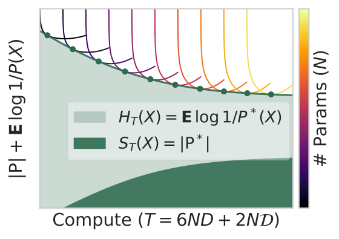
Figure 4. Schematic of the estimation. Each thin curve is a training run, coloured by the number of parameters \(N\); the dots form the lower envelope. At each compute bound, dark green is \(S_T\) and light green is \(H_T\). Source: Fig. 2b of the paper.
Under standard scaling assumptions the authors derive typical trends. Epiplexity grows with the compute bound \(T\) while time-bounded entropy falls. With unlimited compute, epiplexity grows with the size \(\mathcal{D}\) of the dataset while time-bounded entropy per token falls. These trends are typical only; the emergence experiment below is a counterexample.
Experiments
Cellular automata: equal programs, different information
Setting. The ECA has 64 cells with periodic boundary. The input \(X\) is the state after 1000 updates of a uniform random row; the output is \(Y=F_r^{48}(X)\). Here \(F_r\) is one update under rule \(r\). The authors train transformers of width 16 to 512 and depth 1 to 9 with the requential code. They measure \(S_T(Y\mid X)\) and \(H_T(Y\mid X)\) on a test set of \(\mathcal{D}=10^8\) tokens of \(Y\).
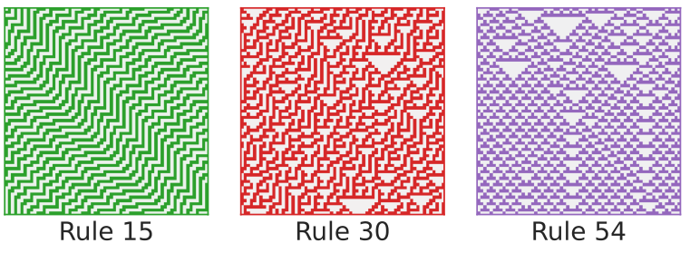
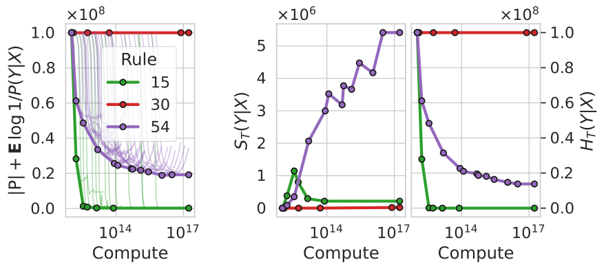
Figure 5. Top: rollouts of rules 15, 30 and 54 from random rows, time downward. Bottom: two-part code, \(S_T(Y\mid X)\) and \(H_T(Y\mid X)\) against compute in FLOPs. Source: Fig. 3 of the paper.
| Rule | Wolfram class | \(S_T(Y\mid X)\), bits | \(H_T(Y\mid X)\), bits |
|---|---|---|---|
| 15 | II, periodic | \(\approx 2\times10^5\) | \(\approx 0\) |
| 30 | III, chaotic | \(\approx 0\) | \(\approx 10^8\) |
| 54 | IV, complex | \(\approx 5.4\times10^6\) | \(\approx 1.5\times10^7\) |
Values at \(10^{17}\) FLOPs, our estimates from Figure 5.
Rules 15, 30 and 54 define programs of equal length and equal running time. Rule 15 is periodic with a simple inverse. The loss saturates quickly; the data contain little information of either kind. Rule 30 is chaotic. The loss makes no progress; the information is maximal and entirely random. Rule 54 is complex but partly predictable. The loss decreases steadily as compute grows; the model extracts millions of bits of structure. Zhang et al. (2024) found that models trained on class IV rules transfer best to downstream tasks, in line with the high epiplexity of rule 54.
Emergence: when more compute means less structure
Setting. The data are 64 updates of rule 54. A non-looped transformer predicts the final state directly. A looped transformer predicts intermediate states as well, dividing the computation into shorter prediction intervals. Its code accounts for the intermediate tokens; it is trained to approximate the dynamics.
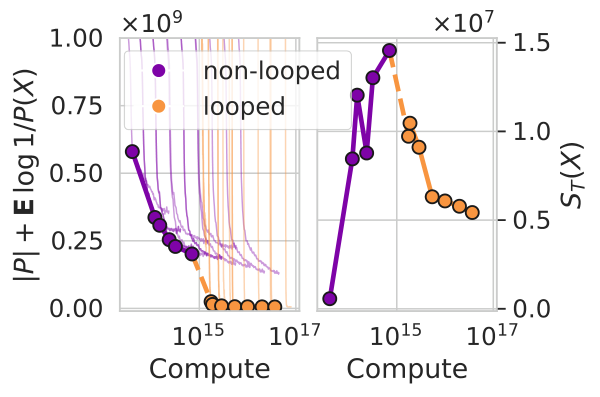
Figure 6. Two-part code and \(S_T\) against compute in FLOPs for the non-looped and looped models. Source: Fig. 6 of the paper.
In Figure 6, below about \(10^{15}\) FLOPs the non-looped model gives the shorter estimated two-part code. Its estimated model part rises with compute. The authors interpret this as learning patterns at a larger scale, such as travelling structures called gliders and their interactions; the plot itself measures code length, not the internal representation. Above that budget, the looped model gives the shorter code, and both the total and the selected model part decrease sharply. These are empirical code estimates, rather than the exact program lengths in the formal definition.
This is the emergence aspect of Paradox 3: predicting many steps of simple dynamics within a limited budget can favour a model of their large-scale regularities. With enough compute, replaying shorter intervals can become preferable. The example also shows that epiplexity need not increase with \(T\). The authors describe the fall as uncommon because simulation is feasible here; they expect growth to be more typical for natural data at moderate compute.
Paradox 3 in the experiment: inference about hidden inputs
The hidden-state example makes the gap between a sampling procedure and likelihood evaluation explicit. A generator has access to the complete state; a predictor receives only part of it. The distribution-matching objective is unchanged.
Setting. \(Z\) is uniform on \(\{0,1\}^{32}\). The map \(f\) is 4 updates of rule 30; the mask \(m\) deletes the first \(h\) bits of \(Z\). The model receives \(m(Z)\) and predicts \(f(Z)\). A transformer with 3 layers and width 256 trains for 20 000 steps with the requential code.
Write \(X=m(Z)\) and \(Y=f(Z)\). Given \(X=x\), exactly \(2^h\) complete states remain possible, each with conditional probability \(2^{-h}\). Grouping the states according to their output gives
\[\begin{aligned} Q(y\mid x) &=\sum_{z:\,m(z)=x}\Pr(Z=z\mid X=x)\,\mathbf 1\{f(z)=y\}\\ &=2^{-h}\sum_{z:\,m(z)=x}\mathbf 1\{f(z)=y\}. \end{aligned}\]The indicator is one for a completion producing \(y\) and zero otherwise. Generating a pair requires sampling one \(z\) and evaluating \(f\) once. Directly evaluating the displayed probability by enumeration requires up to \(2^h\) evaluations of \(f\). Enumeration is one algorithm, not a proof that every algorithm has exponential cost. A predictor can approximate these probabilities without recovering the actual hidden bits or explicitly listing all completions.
Because \(Y\) is deterministic given \(Z\), conditional Shannon entropy satisfies
\[H(Y\mid X)=H(Z\mid X)-H(Z\mid X,Y) =h-H(Z\mid X,Y)\le h.\]Equality holds when \(Y\) distinguishes the hidden completions for each observed \(x\). If several completions give the same output, the entropy is smaller. Thus \(h\) is a natural baseline, rather than an automatic consequence of hiding \(h\) bits for any transformation.
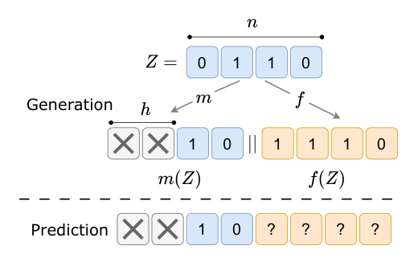
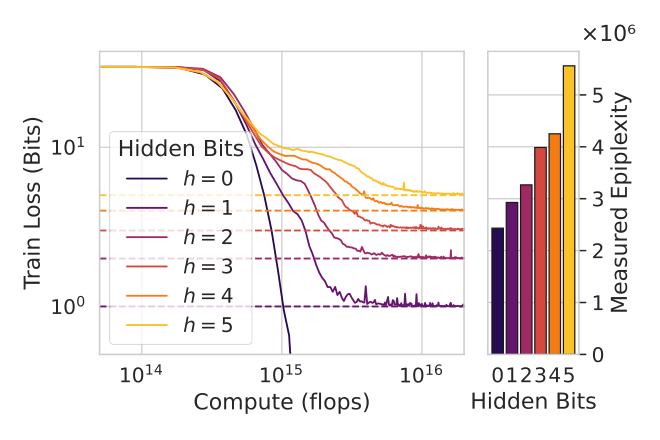
Figure 7. Top: the data. The generator computes \(m(Z)\) and \(f(Z)\) from \(Z\); the predictor receives only \(m(Z)\). Bottom: training loss against compute (dashed lines: \(h\) bits) and the measured epiplexity for each \(h\). Source: Fig. 5 of the paper.
In Figure 7, the authors report convergence near the \(h\)-bit baseline, with training compute increasing approximately exponentially across the tested values of \(h\). The estimated model part increases as well. This supports the interpretation that prediction uses additional inference, but the loss curves alone do not identify the learned algorithm or establish an asymptotic complexity lower bound.
A second task makes the distinction clearer: the generator samples a sequence using a random Markov transition matrix, then withholds some of that matrix from the predictor. The predictor must use the supplied entries and estimate missing transition probabilities from the sequence. The generator performs no such estimation because it already has the matrix. The authors find a larger estimated model part when both strategies are needed than when the matrix is fully visible or fully hidden (Section 5.3.1).
This distinction also applies beyond autoregressive prediction. For a latent-variable model, sampling can proceed by drawing \(Z\) and then drawing \(Y\) given \(Z\), while likelihood evaluation requires the marginal \(Q(y)=\sum_z Q(y\mid z)Q(z)\) (an integral for continuous latents). Efficient approximations may use an inference procedure for the posterior of \(Z\) given \(Y\). The paper discusses this connection in Appendix G.
Chess: the order of the data
Setting. Lichess games as characters. In the forward order each game is written as the moves followed by the final board in FEN, a one-line text encoding of a position. In the reverse order the board comes first. Transformers of 1 to 160 million parameters train on up to \(5\times10^9\) tokens with the requential code.
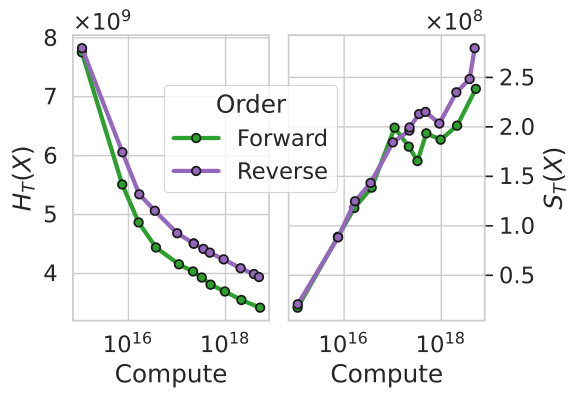
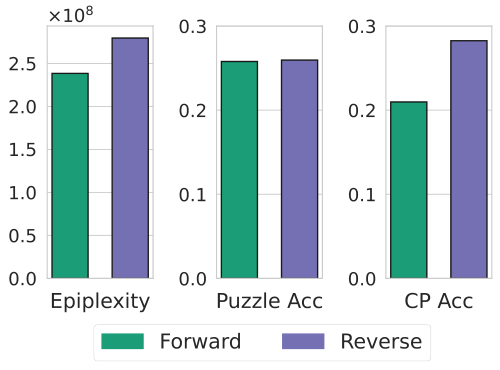
Figure 8. Top: \(H_T\) and \(S_T\) of the forward and reverse orders against compute in FLOPs. Bottom: \(S_T\), accuracy on chess puzzles and accuracy on the centipawn task after fine-tuning. Source: Figs. 4c and 7 of the paper.
In Figure 8, at large compute the reverse order gives both higher time-bounded entropy and higher epiplexity; at small compute the gap vanishes. The authors then fine-tune both models on two OOD tasks. On chess puzzles the forward and the reverse order reach the same accuracy. The centipawn task is to predict the advantage of a position, as evaluated by the Stockfish engine, in 9 classes. On this task the reverse order reaches an accuracy of 0.28 against 0.21. Predicting the moves from the final board forces the model to represent the board state. This structure transfers to a task on board states. The reverse order has the higher training loss, yet it gives the more useful model.
Natural data: text, chess and images
Setting. Three datasets of \(\mathcal{D}=5\times10^9\) tokens each. OpenWebText is English web text with one token per character; CIFAR-5M consists of \(32\times32\) greyscale images with one token per pixel. The authors train transformers of up to 160 million parameters with the requential code, under the bound \(T=6\times10^{18}\) FLOPs.
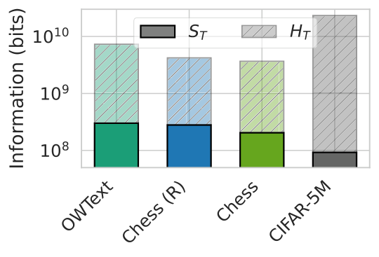
Figure 9. Epiplexity (solid) and time-bounded entropy (hatched) on a logarithmic axis; Chess (R) is the reverse order. Source: Fig. 8a of the paper.
| Dataset | \(S_T\), bits | \(\mathrm{MDL}_T\), bits | \(S_T/\mathrm{MDL}_T\) |
|---|---|---|---|
| OpenWebText | \(\approx 3\times10^8\) | \(\approx 7\times10^9\) | 4% |
| Chess, reverse | \(\approx 2.8\times10^8\) | \(\approx 4\times10^9\) | 7% |
| Chess, forward | \(\approx 2\times10^8\) | \(\approx 3.5\times10^9\) | 6% |
| CIFAR-5M | \(\approx 9\times10^7\) | \(\approx 2.3\times10^{10}\) | 0.4% |
Our estimates from Figure 9.
In these experiments, estimated epiplexity is a small fraction of the total two-part code length. At the stated token count and compute budget, text has the largest estimated model part; CIFAR-5M has the largest total code length and the smallest model part. More than 99% of its code length is assigned to residual pixel values. This ranking is relative to the paper’s tokenisation, model family and compute budget; it is not an intrinsic ordering of text and images.
Published scaling laws give the same ordering: extrapolated to \(T=10^{25}\) FLOPs and \(10^{12}\) tokens, they place language first and pixel images last. Epiplexity also agrees with a result on data selection. Adaptive data optimisation (Jiang et al., 2025) reweights data domains during pretraining; the data it selects have higher prequential epiplexity than natural sampling, along with better downstream accuracy.
Limitations
The authors acknowledge these limits:
- Epiplexity measures the amount of structure, independent of the usefulness of that structure for a given task. The authors stress that it is no guarantee of OOD performance.
- The theorems are asymptotic and rest on cryptographic assumptions. The largest proved epiplexity grows as \(\Omega(\log_2 n)\).
- The prequential estimate is a heuristic; the requential estimate is 2 to 10 times slower.
The released code and the experiments show further limits:
- Every estimate depends on the architecture, optimiser, bound \(T\) and evaluation size \(\mathcal D\). Comparing datasets requires a common observer and protocol. Comparing architectures treats the observer as the experimental variable and requires common data, evaluation criteria and compute accounting.
- Every sweep in the released code uses one random seed; no figure shows error bars.
- All experiments use transformers.
Conclusion
Epiplexity is the model part of the shortest two-part description available under a time bound. This restriction permits phenomena excluded by the corresponding unbounded statements: deterministic computation can increase the time-bounded quantities, prediction order can matter, and prediction can require a more elaborate model than generation. The empirical procedures approximate the model part using cumulative excess prequential loss or a requential student code, then select a model by total description length. The ranking of datasets is therefore relative to the specified observer and budget.
For machine learning, predictive loss and estimated model description length provide complementary measurements. Two datasets with the same final loss can yield different model parts. Epiplexity is therefore a candidate criterion for data selection, while transfer performance must still be evaluated on the intended downstream tasks.
Follow-up work
The most direct follow-up work comes from Andrew Gordon Wilson’s group:
- Qiu et al. (2026), Requential Coding: a teacher selects examples drawn from the student’s predictive distribution. Recording the selection indices, together with shared randomness and the training algorithm, lets a decoder reconstruct the student’s training trajectory. The coding cost depends on teacher–student disagreement, rather than the entropy of the original data. The authors obtain PAC-Bayes generalization bounds for billion-parameter language models. At fixed loss, larger models and ensembles can have shorter codes; repeated training epochs can increase the code length and indicate overfitting.
- Su et al. (2026), Epiplexity Guided Data Selection and Generation for Out-of-Distribution Generalization: introduce two online uses of an epiplexity proxy. EpiSelect fits cross-domain loss-scaling laws to account for how training on one domain affects predictions on others, then adjusts sampling weights to maximize the predicted proxy gain. EpiGen trains a synthetic-data generator with REINFORCE. Its reward is the reduction in learner loss on a buffer of earlier samples after training on a new generated batch. Evaluating earlier samples rewards improvements that extend beyond the new batch itself. The authors report gains in zero-shot downstream evaluation for EpiSelect and in downstream fine-tuning for EpiGen.
These methods make compression-based measures usable during training. Requential coding constructs an explicit model code; EpiSelect and EpiGen optimize online proxies whose relationship to the formal minimum defining \(S_T\) remains open.
References
- M. Finzi, S. Qiu, Y. Jiang, P. Izmailov, J. Z. Kolter, A. G. Wilson. From Entropy to Epiplexity: Rethinking Information for Computationally Bounded Intelligence. arXiv:2601.03220v2, 2026. Code.
- S. Qiu, M. Finzi, Y. Zheng, K. Zhang, A. G. Wilson. Requential Coding: Pushing the Limits of Model Compression with Self-Generated Training Data. arXiv:2607.11883, 2026.
- A. P. Dawid. Present position and potential developments: some personal views. Statistical theory: the prequential approach. Journal of the Royal Statistical Society, Series A, 147(2):278–292, 1984.
- L. Theis, N. Y. Ahmed. Algorithms for the Communication of Samples. ICML, 2022.
- X. Zhang, X. Li, D. Dou, J. Wu. Measuring Information Transfer in Neural Networks. arXiv:2009.07624, 2020.
- M. Li, P. Vitányi. An Introduction to Kolmogorov Complexity and Its Applications. Springer, 2008.
- M. Blum, S. Micali. How to generate cryptographically strong sequences of pseudo random bits. FOCS, 1982.
- S. Wolfram. A New Kind of Science. Wolfram Media, 2002.
- S. Zhang, A. Patel, S. A. Rizvi, N. Liu, S. He, A. Karbasi, E. Zappala, D. van Dijk. Intelligence at the Edge of Chaos. arXiv:2410.02536, 2024.
- V. Papadopoulos, J. Wenger, C. Hongler. Arrows of Time for Large Language Models. ICML, 2024.
- D. Silver et al. A general reinforcement learning algorithm that masters chess, shogi, and Go through self-play. Science, 362(6419):1140–1144, 2018.
- Y. Jiang, A. Zhou, Z. Feng, S. Malladi, J. Z. Kolter. Adaptive Data Optimization: Dynamic Sample Selection with Scaling Laws. ICLR, 2025.
- E. Su, A. Potapczynski, S. Qiu, E. Hughes, A. G. Wilson. Epiplexity Guided Data Selection and Generation for Out-of-Distribution Generalization. arXiv:2608.11746, 2026.